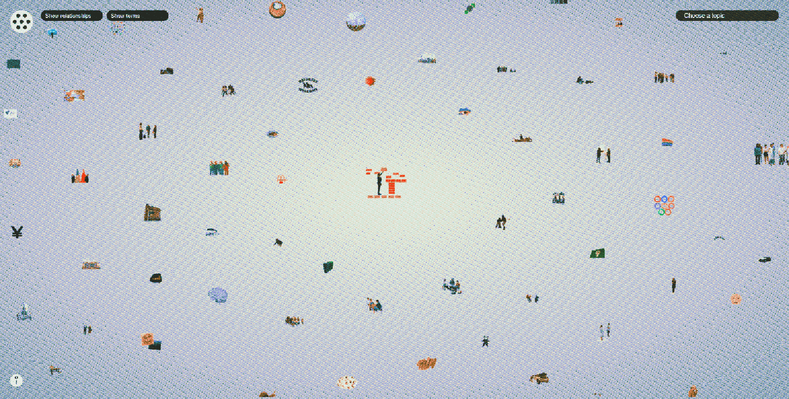
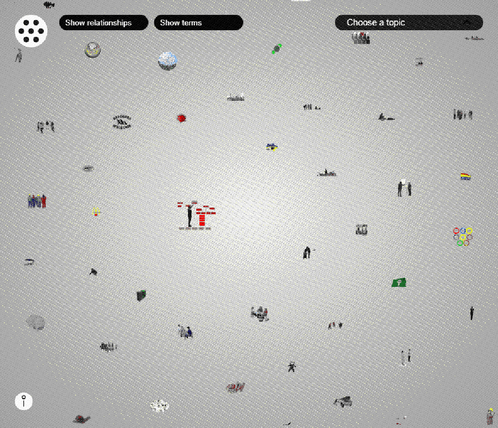

✳ Web
✳ Creative Coding
üîó Undefined Panorama is a project by Yang Ah Ham in collaboration with, The Laboratory of Manuel B√ºrger, Cailean Finn, and Nora O Murch√∫. The work was made with the support of curator SungMin LJ, assistant researcher Parr Geng, coordinator Yena Ku.
Undefined Panorama (2018–present) explores socio-political infrastructures and systems, and the relations embedded within them. This continuously evolving project is based on research collected by the artist Yang Ah Ham as she observes how people deal with hardship generated by the impact of globalisation, societal crisis, inequality, economics, and politics in their lives. The aim of the project is to observe how society is organised and aims to ask: What possibilities are there for social structures based on care and solidarity?


The online version of Undefined Panorama allows people to move between micro and macro perspectives of global, national and local events. In moving between these scales, Yang Ah Ham aims to open up questions about our relations to these events, and to generate new meanings by altering the scale of observation.
This website was commissioned by 2022 Seo-Seoul Museum of Art Pre-opening Public Program Exceptional Times, Uncertain Moves, and created with support from the Arts Council Korea.